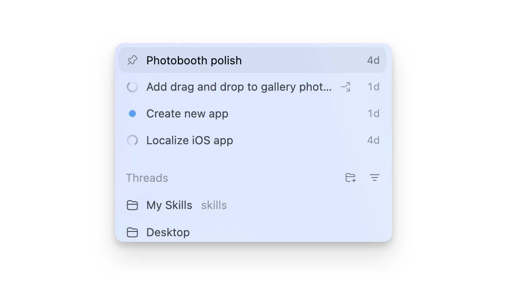

Codex Subagents
Subagents are an advanced feature of Codex that allows you to break down large tasks into smaller parts and process them in parallel or sequentially. This section details how to configure and use subagents.
What is a sub-agent?
Subagents are helper agents that Codex can invoke in parallel to handle different parts of a complex task. By configuring subagents, you can:
- Break large tasks into manageable parts
- Process multiple independent tasks in parallel
- Configure specialized agents for different types of tasks
- Improve efficiency when handling large projects
Subagents are especially suited to scenarios that require processing multiple files or multiple independent tasks at the same time.

Configure Subagents
Basic Configuration
Configure Subagents
[features]
multi_agent = true
# Configure agent parameters
[agents]
# Maximum number of parallel threads
max_threads = 6
# Maximum nesting depth
max_depth = 1
# Maximum job runtime (seconds)
job_max_runtime_seconds = 1800
Custom Agent Roles
You can define custom agent roles in the configuration:
Defining Agent Roles
[agents.reviewer]
description = "Focus on code review and quality issues"
nickname_candidates = ["Reviewer", "CodeChecker", "QualityBot"]
# Can point to a configuration file
# config_file = "agents/reviewer.toml"
Use subagents
Manually Invoking Sub-agents
In Codex, you can invoke subagents in the following ways:
Call subagents
@reviewer, review src/auth.py file
# Use /agents command
/agents run reviewer --task "Review all test files"
Automatically Using Sub-agents
Codex can automatically choose to use subagents based on the task. For example, for a large refactoring task, Codex may automatically launch multiple subagents to handle different modules.
How subagents work
Parallel processing
When tasks can be broken down into independent parts, subagents can work in parallel:
任务：审查整个代码库 ├─ 子代理 1：审查 src/auth/ 目录 ├─ 子代理 2：审查 src/api/ 目录 ├─ 子代理 3：审查 src/utils/ 目录 └─ 主代理：汇总结果
Sequential processing
When tasks have dependencies, subagents work sequentially:
任务：实现新功能
└─ 子代理 1：创建数据模型
└─ 子代理 2：创建 API 端点
└─ 子代理 3：编写测试
Nesting depth
The max_depth in the configuration controls how many levels deep agents can be nested:
- Depth 0: Root session
- Depth 1: Direct subagents
- Depth 2: Subagents of subagents
It is recommended to keep max_depth at 1 or 2, as overly deep nesting increases complexity and cost.
Tool calls
Subagents can use all of Codex's standard tools:
- Reading and Editing Files
- Execute commands
- Use skills
- Calling MCP servers
Result summary
The main agent is responsible for aggregating the results of all subagents and providing a unified output.
Agent Role Configuration
Create custom agent roles
Create agent role configuration files
description = "Focus on writing unit tests and integration tests"
nickname_candidates = ["Tester", "TestBot", "QABot"]
[behavior]
# Agent behavior configuration
test_framework = "pytest" # Preferred test framework
include_coverage = true # Requires coverage report
Referencing in the Main Configuration
Referencing Agent Configuration
config_file = "agents/tester.toml"
Monitor subagents
Viewing Active Agents
Viewing Active Agents
/agents status
# View details
/agents list
Agent output
Codex displays the output of each subagent and summarizes the results in the main interface.
A progress indicator is displayed while subagents are running, letting you understand the overall task status.
Best Practices
Task decomposition
- Break large tasks into independent subtasks
- Ensure that there are no strong dependencies between subtasks (when parallelization is possible)
- Define clear inputs and outputs for each subtask
Configuration optimization
- Adjust max_threads based on task complexity
- Configure specialized agent roles for different types of tasks
- Set a reasonable job_max_runtime_seconds to avoid long-running processes
Monitoring and debugging
- Regularly check the output of subagents
- Use /agents status to check the overall progress.
- Cancel specific subagents when necessary
Subagents are an advanced feature; it is recommended to become familiar with Codex's basic operations before using them.
FAQ
Q: What is the difference between subagents and skills?
Subagents are independent AI agents that can perform complex multi-step tasks. Skills are predefined workflows that focus on specific types of tasks.
Q: What is the maximum number of subagents that can run simultaneously?
Controlled via the max_threads configuration, the default is 6. The actual number available depends on your subscription plan.
Q: Can subagents access my files?
Yes, subagents can read and modify files, but they are subject to sandbox and security policy restrictions.
Q: How do I debug issues with subagents?
Use /agents status to check the status of agents, and review their output logs to locate issues.
other extensions